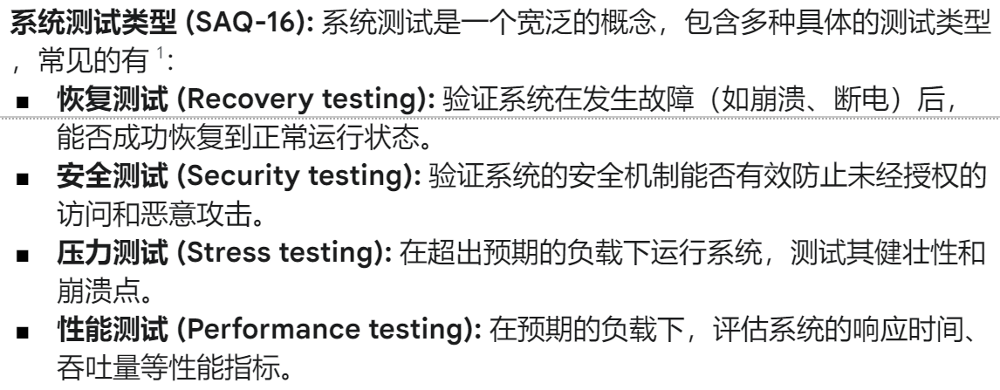

软件工程 期末速成笔记¶
知识点¶
第一章 软件的本质¶
- 软件的定义是构成一个配置的一系列条目或对象的集合
- 指令
- 数据结构
- 文档
- 特性：损耗与退化
- no wear out but deteriorate
- 失效率 - 浴盆曲线
- 退化：持续变更引入新错误导致质量下降
- 无备件
- 应用类型
- 系统软件
- 应用软件
- 工程/科学软件
- 嵌入式软件
- 产品线软件
- web/移动应用
- 人工智能软件
- 遗漏软件
- 长生命周期
- 业务关键性
- 如果重大变更 —— Reengineering
- 软件神话
- 错误观念
第二章 软件工程¶
- 层次化技术
- 质量关注 quality focus
- 过程 process - 管理和组织开发
- 方法 methods - 开放和分析软件的技术和步骤
- 工具 tools - 支持过程和方法的自动化工具
- 过程框架的五个活动
- 沟通
- 策划
- 建模
- 构建
- 部署
-
七项通用原则
- 存在皆为价值
- 保持简单
- 保持愿景
- 他人将消费你所生产的
- 拥抱未来
- 为复用提前计划
- 思考
-
umbrella activities - 软件工程的支撑活动，项目管理、质量保证、配置管理等
-
agile process models - 敏捷过程模型
第三章 软件过程结构¶
- 四种过程流 process flow
- 线性 linear
- 迭代 iterative
- 演化 evolutionary
- 并行 parallel
- 过程模式 - 在软件工程上下文中一致地描述问题的解决方案
- 模式名称 pattern name
- 意图 intent - 模型遇到的环境和问题
- 类型
- 阶段模式 stage pattern - 过程框架活动
- 任务模式 task pattern - 软件工程动作或工作任务
- 制品模式 phase pattern - 框架活动的顺序
- 初始背景
- 问题
- 方案
- 结果背景
- 相关模式
- 已知应用和示例
- 过程评估 - 软件过程的当前状态
- 通用标准：ISO 9001:2000 for software & SPICE
- CMMI
- 初始级 initial
- 已管理级 managed
- 已定义级 defined
- 已量化管理级 quantatively managed
- 优化级 optimizing
第四章 过程模型¶
不允许skip
- 规定性过程模型
- 瀑布模型 waterfall model - 系统的、顺序的软件开发方法
- 需求定义明确时的一种合理的方法
- 增量过程模型 incremental process model - 每个线性序列产生一个可交付的软件
- 需要快速得到可运行的核心产品的一种良好方法
- RAD模型 - 高速的增量模型
- 演化过程模型 Evolutionary Process Model - 迭代模型
- 具有迭代性、能够轻松适应产品需求变化、通常不会产生一次性系统
- 原型模型 prototyping model
- 用于客户需求不明确的情况
- 螺旋模型 spiral model
- 强调风险分析
- 并发开发模型 concurrent development model
- 并发工程的另一种称呼、定义触发工程活动状态转换的事件
- 瀑布模型 waterfall model - 系统的、顺序的软件开发方法
- 专用过程模型 Specialized Process Models
- 基于构件的开发 (Component-Based Development)
- 依赖于面向对象技术的支持
- 形式化方法模型 (The Formal Methods Model)
- 通过数学方法，精确定义系统需求
- 面向方面软件开发 (Aspect-Oriented Software Development)
- 基于构件的开发 (Component-Based Development)
-
统一过程 The Unified Process - UP
- 初始阶段 Inception
- 精化阶段 Elaboration
- 构建阶段 Construction
- 移交阶段 Transition
- 生产阶段 Production
-
个体和团队过程模型 Personal and Team Process Models
- 个体软件过程 PSP
- 团队软件过程 TSP
第五章 敏捷开发¶
- 敏捷性 - 核心驱动力：变化的普遍性
- 有效响应变化
- 强调沟通
- 由客户需求驱动
- 自组织/自控制
- 快速、增量交付软件
- 敏捷开发的12条原则
//todo
画图题¶
1 用例图¶
角色、角色的行为、第三方参与的部分
用例图方框是一定要画的
2 CRC卡¶
类名、类的描述信息、职责、合作类


3 类图¶
类名、成员变量、成员方法（funcname(func_args, ..) : type）
4-1 状态图 state diagram¶
节点 - 状态（状态名，状态变量，状态活动） + 边 - 事件
- q：状态变量是什么
1 2 3 4
system status = "Copying" display msg = "copy count =" // string常量 display message = #copies // 具体变量值 display status = steady | blinking // 好像是这两个状态二选一，啥意思还不知道
4-2 活动图 activity diagram¶
感觉容易搞混
单线圈圈是起始状态，菱形是判断（分叉）、双线圈圈是结束状态
5 时序图¶
节点：用户、登录页面、业务逻辑、数据库...
有向边：出边节点对入边节点的行为
6 数据流图¶
数据在各个系统之间的流动，通常分为数据请求和数据返回两个流动边
有两种画法，未确认
7 软件架构图¶
如果是layered software architecture：

- UI layer
xxxApp - 例如WebApp、MobileApp
- Server layer
xxxmanagement - 感觉像是前后端那些进程，比如QR_management、Security_managementxxxmaintenance - 资源和数据库的管理，比如Logistics_resource_maintenance、Sports_database_maintenance
- Database Layer
xxxdatabase - 比如User_database、Sports_database
如果是web-based software architecture：

差不多这样，具体还没看细节
感觉和这个有点像，没找到完全对应的课本内容

例题¶

- 一个知识产权管理局（IPMB）希望建立一个专利申请处理系统（PAPS），以实现其专利流程的自动化并提高效率。
- 申请人输入姓名和电子邮件后，可以注册一个新账户。
- 登录系统后，他/她可以修改其个人资料，包括所属单位、电话号码、地址等。
- 申请人可以向PAPS系统提交其专利申请。对于每项专利，申请人应选择专利主题目录并输入以下信息：专利名称、作者、所属单位、摘要、关键词、附件。
- 然后，申请人可以查看专利审批状态，并根据审查员的意见提交相应的函件。
- 系统将为每项专利指派一名主审工程师（PE）来处理申请。PE将简要检查申请的格式合规性，然后通知申请人该专利将被正式审查或直接驳回。
- 之后，PE将指派并邀请审查员，并根据审查员的意见做出决定（批准、暂停、驳回）。
- 审查员可以查看审查任务、下载申请文件，并在线提交意见和决定。
- 每位PE可以同时处理多项专利。
- 为了方便PAPS的运作，系统需要维护一些列表，例如审查员列表、专利主题列表。
数据流图¶
参考这个：

还有个人资料管理系统、专利系统（专利申请、审批系统）
角色还有PE、审查员
CRC卡¶
-
applier
-
patent
状态图¶
- patent
软件架构图¶
测试策略¶
RMMM plan¶
- RMMM 指的是风险缓解、监控和管理 (Risk Mitigation, Monitoring, and Management)。
- RMMM 计划：
- 项目： EMSS 系统
- 风险类型： 人力资源风险 或 红外硬件风险
- 优先级（1 低 ... 5 严重）： 3
- 风险因素： 在软件开发过程中，出现人员变动，例如软件工程师离职。
- 可能性： 40%
- 影响： 软件开发流程延迟
- 监控方法： 1. 监控工程师的情绪； 2. 检查工程师的生产力； 3. 调查竞争对手的薪资水平
- 缓解措施（应急方案）： 1. 组织团队建设活动； 2. 丰富文档； 3. 频繁的技术会议或培训； 4. 建立人力资源储备库。
- 管理（资源预估）： 1. 寻找新人； 2. 工作交接； 3. 总结原因
简答题 - 计算题¶
1 流程图与圈复杂度 Flowcharts and Cyclomatic Complexity¶
- 题干：According to following flowchart,... Please answer following question: (1) What is the value of the Cyclomatic Complexity, V(G)? (2) Please list all independent logical paths for testing.
做法：
例题：
path3应该是123578
2 等价划分和边界值分析技术设计测试用例¶

边界值分析的时候还需要添加一个边界值内的典型值样例。
3 缺陷放大模型¶

假设：(1) 在概要设计、详细设计和编码/单元测试阶段，新产生的错误数分别为 20、60、60；(2) 在概要设计与详细设计之间，以及详细设计与编码/单元测试之间，传入的错误与被放大的错误是相同的；(3) 放大系数 x 的值，在详细设计和编码/单元测试阶段是相同的，均为 3。
如果未使用FTR（正式技术评审）和使用FTR的情况下，整个流程的检测效率分别为0和50%，请说明概要设计、详细设计和编码/单元测试的缺陷放大过程，并分别计算出这两种情况下，经过编码/单元测试后的最终错误数。
ppt例子：
有点没懂这个分叉的方式。
4 LOC和FP方法估算项目成本¶
用LOC和FP方法估算项目成本，并解释FP度量的优势。（quiz和历年卷出现过两次）
有两种传统的估算方法：LOC（代码行）方法和 FP（功能点）方法。假设总人工成本率为每月8000美元。对于某一类型的软件项目，其平均生产率分别为 625 LOC/人月（即 LOC/pm）和 6.4 FP/人月，总估算规模分别为 35000 LOC 和 370 FP。请回答以下问题。（7分）
(1) 每 LOC 和每 FP 的成本分别是多少？以人月（pm）为单位，分别通过以上两种估算方法得出的总估算项目成本是多少？
(2) 在某些方面，为什么基于 FP 的度量方法比基于 LOC 的度量方法更具优势？
5 风险暴露度¶

简答题 - 概念题¶
1 软件过程与方法学¶


2 需求分析¶


3 测试¶
描述黑盒测试和白盒测试之间的区别：黑盒测试从用户视角出发，不关心内部实现，只关注输入和输出是否符合功能需求（测试“What”）。白盒测试则深入代码内部，利用对程序逻辑结构的了解来设计测试用例，以覆盖尽可能多的代码路径（测试“How”）。
列出四种类型的系统测试

请描述OAILP/PPS/PHM/AMS/PAPS的测试策略
//todo
一个好的软件测试应具备哪些属性